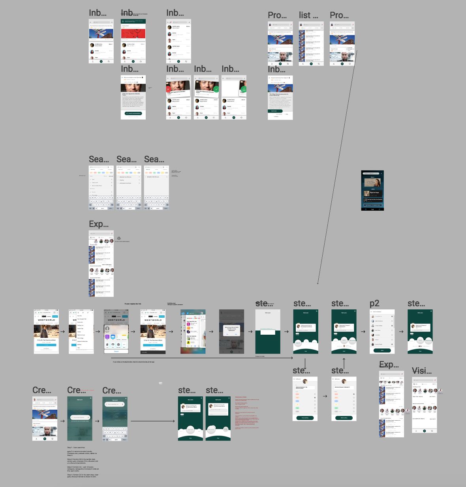
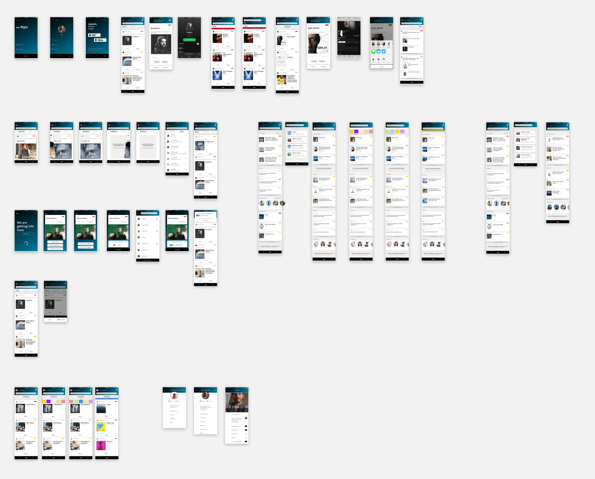

Mylo: A recommendations-centered social network
I was hired by a Seattle-based startup to be their first UX and Interaction Designer.
I was responsible for translating the startup’s value propositions into screens,
establish the visual system, and create all prototypes. In the process, I also ended up creating their logo.
In 2 months, I moved from creating Figma wireframes to designing high-fidelity screens on Sketch.
I exported the screens into Principle to animate the prototype that is being used to pitch the idea to investors.
Mylo is an app to find, exchange, and keep track of recommendations. Key features are the Bucket list, where users can keep things that they still want to do; and the Requests tab, where users can ask for specific recommendations from their circle. Users can also directly send recommendations to each other. Direct recommendations fall under a Tinder-like interactive experience, where users can accept or reject recommendations. See some of the interactions below, and a little bit about the process at the bottom.


Wireframes
After discussing features with co-founders and sketching screens, I designed most of the screens on Figma. Using Figma was crucial to establish common ground with stakeholders. 
Sketch screens
I created a total of 45 screens, including sign up flow, account settings flow, and obvisouly all of the features. After finalizing the visual design, I exported screens to Principle What I Would Improve
Mylo’s branding and overall Visual design of the app could be improved if I had more time.
Our tight schedule (and budget) kept me from achieving a top-notch quality level.
Second, this was the first time I used Sketch professionally, and it showed how powerful it can be.
In my next project I will make Symbols, Text, and Layer styles a part of the project from the start.
These features are incredibly powerful and can dramatically cut down design iterations times if used properly.
← Click here to go back to the frontpage